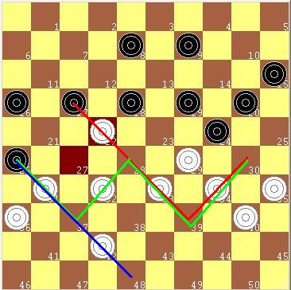

国际跳棋教程第14节 吃多子规则
#1 国际跳棋教程第14节 吃多子规则 作者：孤竹 发表时间：2009-3-23 14:31:06
14. The stick move
Attacking multiple pieces is dangerous. Your opponent could make a stick move.
攻击多个棋子是很危险的。你的对手可以利用吃多子规则。
14. The stick move
Attacking multiple pieces is dangerous. Your opponent could make a stick move.
攻击多个棋子是很危险的。你的对手可以利用吃多子规则。
In the game black played 21 – 26. In this case the move is very dangerous. Not only does he
attack multiple pieces, his position is very vulnerable because the many gaps, especially
the gap at 13. White took a shot to get two kings.
在这盘棋中黑棋走21 - 26 。在这种情况下，此举是非常危险的。不仅仅是他的攻击多个棋子，他的阵形
是非常脆弱的，因为许多空格，特别是在13格的空格。白棋一举得到两个白王。
#2 Re:国际跳棋教程第14节 吃多子规则 作者：竹子 发表时间：2009-3-23 14:35:15

白棋利用百格国际跳棋必须吃多子的规则，借26格黑棋必须走26X37X28X39X30吃四个白子的机会，达到了白棋从22跳吃两黑子到升变线成王的目的。
吃多子规则：能跳吃对方棋子的时候，只许走吃最多棋子的路线。
黑棋走27格的棋子最多只能吃3个子，少于26格可以吃4个子的数目，不能走，因此，白棋走到22格的白子不会被消灭